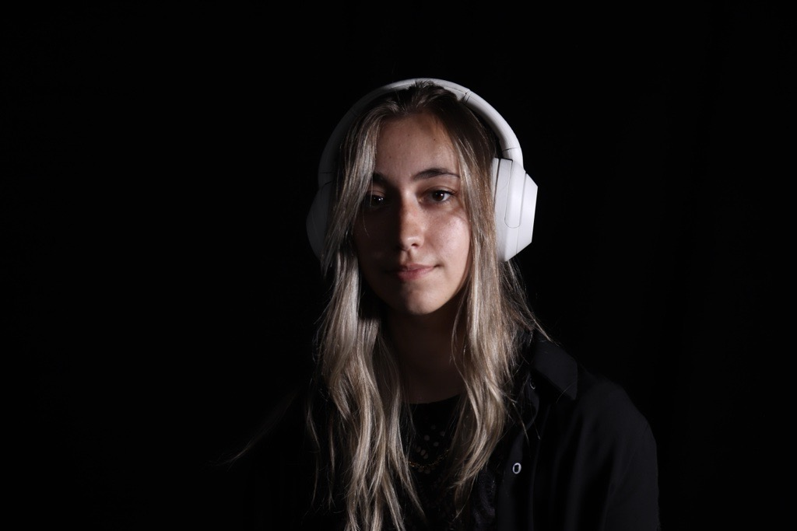
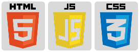

Iléona Vial
Technologue créative en médias interactifs

2018-2021
Baccalauréat en Sciences et Technologies de Management
Cavaillon, France
2023-2027 (En cours)
DEC en Technique d'intégration multimédia
Collège de Bois-De-Boulogne, Montréal
Qui suis-je ?
Je suis une créative polyvalente en intégration multimédia, attirée par les projets qui cherchent à raconter quelque chose, à faire ressentir, ou à créer du lien.
J’apprecie explorer différents médiums, du web à l’installation interactive avec une envie constante de comprendre, d’expérimenter et de donner du sens à ce que je crée. Ce qui m’intéresse est l’expérience dans sa globalité, ce que l’on perçoit, ce que l’on comprend, et ce que l’on ressent.
Mon fonctionnement
Dans mes projets, je navigue entre plusieurs rôles, mêlant design, technique et narration. Cette adaptabilité me permet d’avoir une vision d’ensemble, tout en restant attentive aux détails qui font la différence. J’aborde chaque projet comme un équilibre entre intention et expérimentation. J’aime tester, ajuster, parfois simplifier pour arriver à une expérience qui reste à la fois cohérente et accessible ou parfois complexifier pour plus de profondeur dans un message.
J’accorde une importance particulière à la relation entre le visuel, le son et l’interaction, afin de créer des expériences complètes et engageantes.